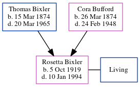

Rosetta Calvert (née Bixler) 1919 - 1994
[ Home ] | [ Calendar ] | [ Surnames Index ] | [ Census Index ] | [ Family History ]The youngest of 12 children of Thomas Bixler (a farmer) and Cora Bufford, Rosetta Bixler, the fourth cousin twice-removed on the mother's side of Nigel Horne, was born in Spencer, Owen, Indiana, USA on Oct 5, 19191,2,3,4,5. She married Otis Calvert in Owen, Indiana, USA on Dec 24, 19356. On Feb 9, 1920, she was living in Clay, Indiana2.
She died on Jan 10, 1994 in Greencastle, Putnam, Indiana1,3,5 and was buried at Riverside Cemetery, Spencer, Indiana after Jan 10, 1994.
Parents
- Thomas Isaac was born on Mar 15, 1874
- Cora Pearl was born on Mar 26, 1874
Citations
- Social Security Death Index - Findmypast
- US Census 1920 - Findmypast (was age 0 and the daughter of the head of the household)
- United States Billion Graves index - Findmypast
- United States Marriages - Findmypast
- United States Obituary Notices - Findmypast
- United States Marriages - Findmypast
Media
United States Marriages - R_75587487/2
United States Marriages - FS/MAR/34114183/2
United States Billion Graves index - US/BMD/BILLION/011338442
United States Obituary Notices - US/TRIB/035527508
Family Tree
Generated by ged2site. Last updated on Jun 11, 2024